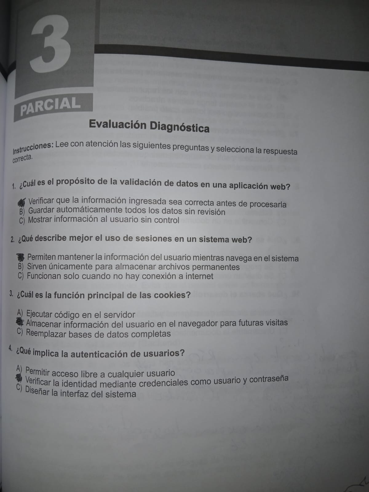
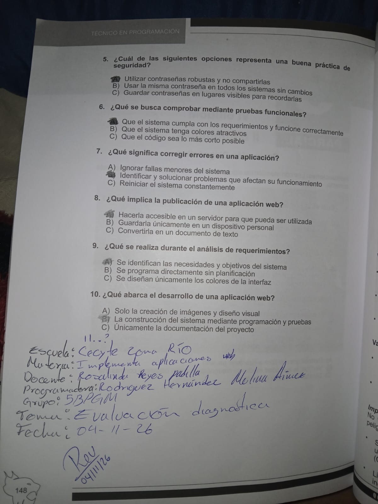

Examen diagnóstico pág. 147-148
Realizamos el examen diagnóstico correspondiente a las páginas 147 y 148, con el propósito de identificar los conocimientos que teníamos sobre los temas que veremos durante este parcial. Fue una actividad para recordar y poner a prueba lo que ya sabíamos.


Evidencia 1. Muy fácil, 10 de 10.